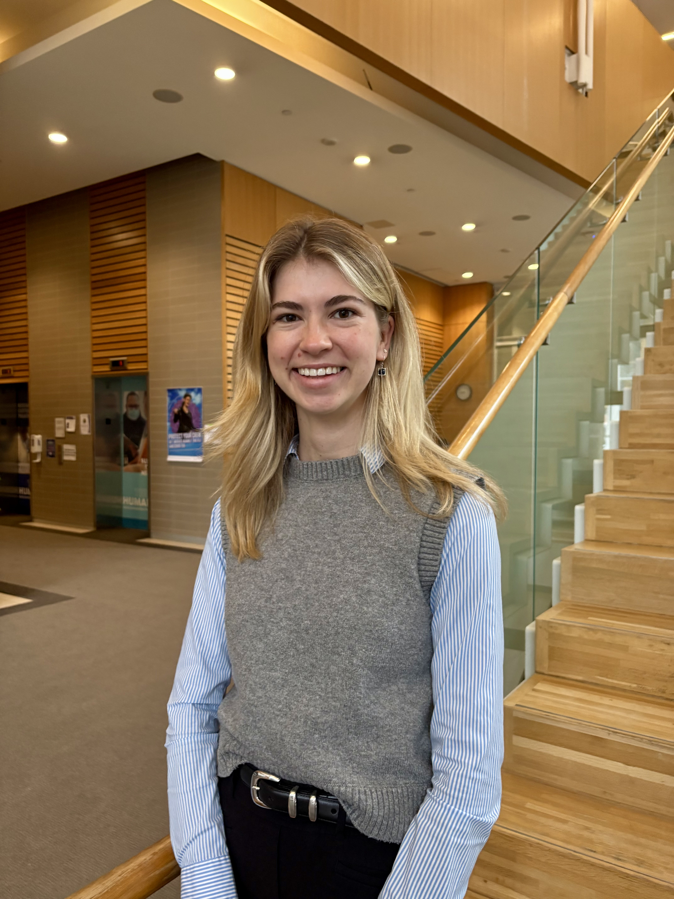
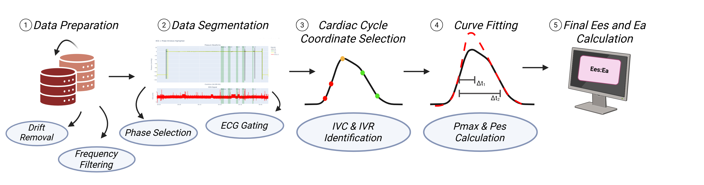

Biomedical Engineering Graduate Student | Cardiac Research | Signal Processing

I am a graduate student at the University of Toronto working in the Cardiac Catheterization Research Laboratory at Mount Sinai Hospital. My work focuses on cardiac engineering, hemodynamic modelling, invasive waveform analysis, and signal processing for clinically relevant applications.
My current research centers on the development and validation of an algorithm to estimate right ventricular–pulmonary arterial coupling from invasive pressure data, with the goal of improving physiologic assessment in advanced heart failure.
Developed a signal processing and hemodynamic analysis pipeline to estimate right ventricular–pulmonary arterial (RV–PA) coupling from invasive pressure waveforms collected during right heart catheterization.
This work integrates physiological signal processing with clinically interpretable modelling to characterize right ventricular function and its interaction with the pulmonary circulation in advanced heart failure.

Overview of the analysis pipeline, including signal preprocessing, feature extraction, and derivation of hemodynamic metrics used to assess RV–PA coupling.
Designed and built a mechanical testing apparatus to evaluate the performance of sternal fixation methods under physiologically relevant cyclic loading conditions.
The system simulates breathing-induced forces on the sternum to assess stability and risk of sternal dehiscence, enabling more realistic and repeatable evaluation of closure techniques.
System simulates breathing-like cyclic loading and applies physiologic forces to replicate thoracic mechanics during post-surgical healing. The original capstone project aimed to create a standardized and reusable platform for evaluating novel sternal closure devices under clinically relevant loading conditions. :contentReference[oaicite:0]{index=0}
Demonstration of the assembled testing apparatus and cyclic loading functionality.